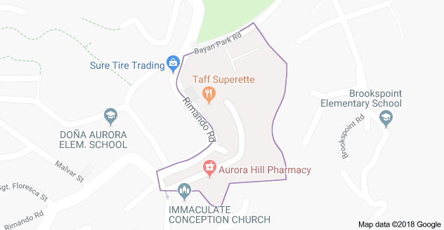
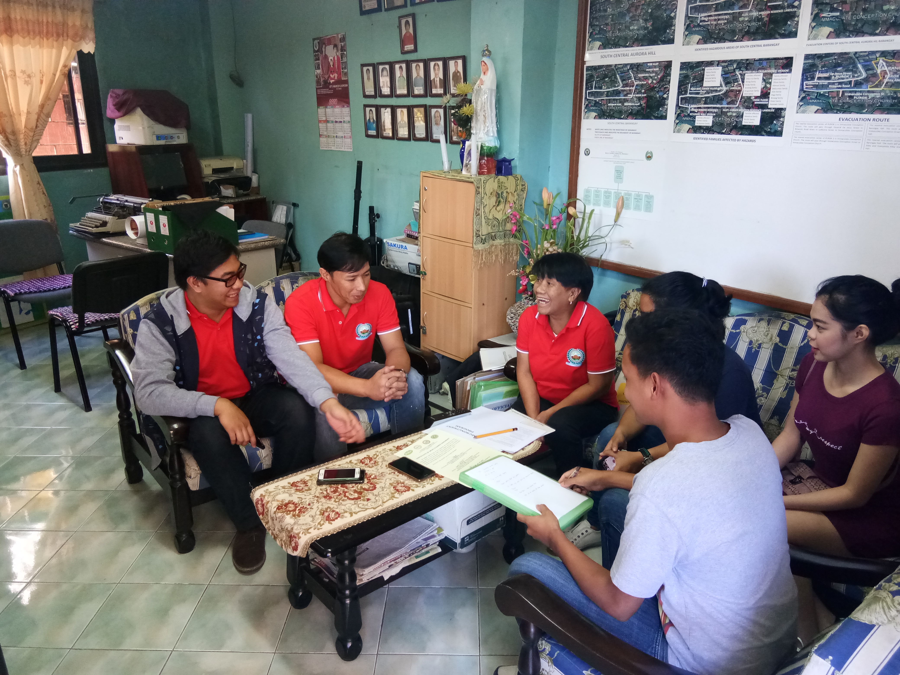
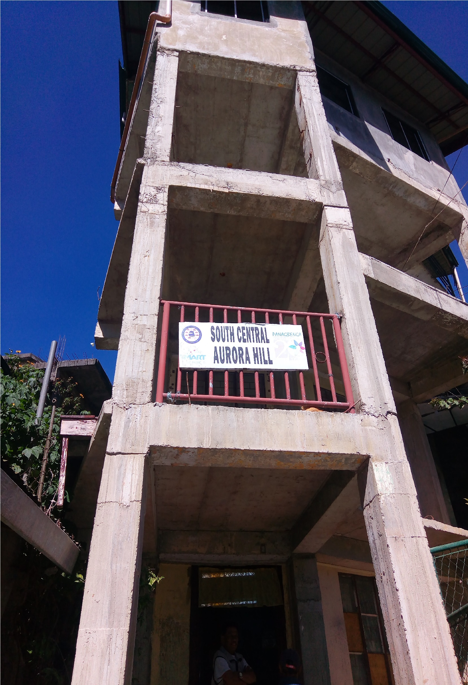

and "U" are a part of it.
The Community

Reference: Google Maps. (2017). Aurora Hill, South Central, Baguio, Benguet.
https://www.google.com/maps/place/Aurora+Hill,+South+Central,+Baguio,+Benguet/
@16.4252094,120.6054812,18z/data=!3m1!4b1!4m5!3m4!1s0x3391a3e313a3fcd1:
0xf1c96bf6c02e523!8m2!3d16.4257061!4d120.6066852
South Central Aurora Hill (SCAH) is one of the numerous barangays of Baguio City.
and one of the thirteen barangays in Aurora Hill.
SCAH has a huge population since it is relatively close to the center of the City.

The SCAH Barangay Officials and the students
of Saint Louis University amid the interview on Inclusion.
Visitors and Inquirers are very much welcome to visit our barangay.
Feel and experience the hospitality of our barangay officials as you visit us at our barangay hall.

Programs
One such program from the South Central Aurora Hill barangay that promotes inclusive education
is the program of the local church to conduct weekly bible studies and other fun activities.
Such programs involves every child willing to participate, it does not discriminate nor exclude anyone.

The barangay has regular activities or celebrations that involve the community, one of these is their
parades that they conduct every now and then where everyone can pitch and attend. The parades goal is to celebrate
and generally have fun. During such occasions, rarely are people excluded since it is something that
celebrates the community especially the children.
The community of South Central Aurora Hill is generally an inclusive community but it can be improved with your
help.